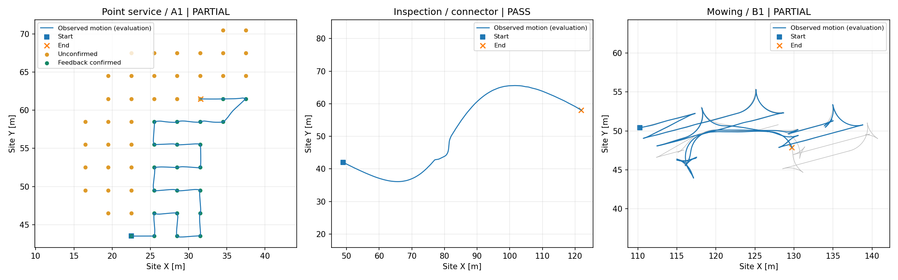

路线到达、工具反馈、终态分别登记。持续封堵专项检查停车和人工交接。原 S17/S18 仍为 PARTIAL。

| 案例 | 结论 | 仿真秒 | 完成量与残余 | 终态或原因 |
|---|---|---|---|---|
| spray_full_A1 | PARTIAL | 944.30 | 确认 22/56 个选择点，原簇 56 点 | RuntimeError('DOCKING_REALIGNMENT_EXHAUSTED') |
| spray_tool_jam | PASS | 94.11 | 确认 3/3 个选择点，原簇 56 点 | COMPLETED |
| mowing_full_B1 | PARTIAL | 1173.70 | 到达 25/47 个选择段，原参考 34 段，确认 74.01 m²，残余 114.38 m² | TimeoutError('WAIT_DEADLINE') |
| mowing_startup_perception_loss | PASS | 280.16 | 到达 5/5 个选择段，原参考 34 段，确认 26.41 m²，残余 1.55 m² | COMPLETED |
| inspection_full_connector | PASS | 343.64 | COMPLETED | COMPLETED |
| inspection_follow_stop_resume | PASS | 108.53 | COMPLETED | COMPLETED |
| inspection_detour | PASS | 100.07 | COMPLETED | COMPLETED |
| inspection_persistent_block | PASS | 79.30 | HUMAN_REQUIRED | NO_VALIDATED_ROUTE_WITHIN_BOUNDED_SEARCH |
| mowing_persistent_block | PASS | 62.73 | 到达 0/5 个选择段，确认 2.60 m²，残余 25.36 m² | RuntimeError('ALTERNATE_ROUTE_REQUIRES_COVERAGE_RESEQUENCING_RETAIN_RESIDUAL') |